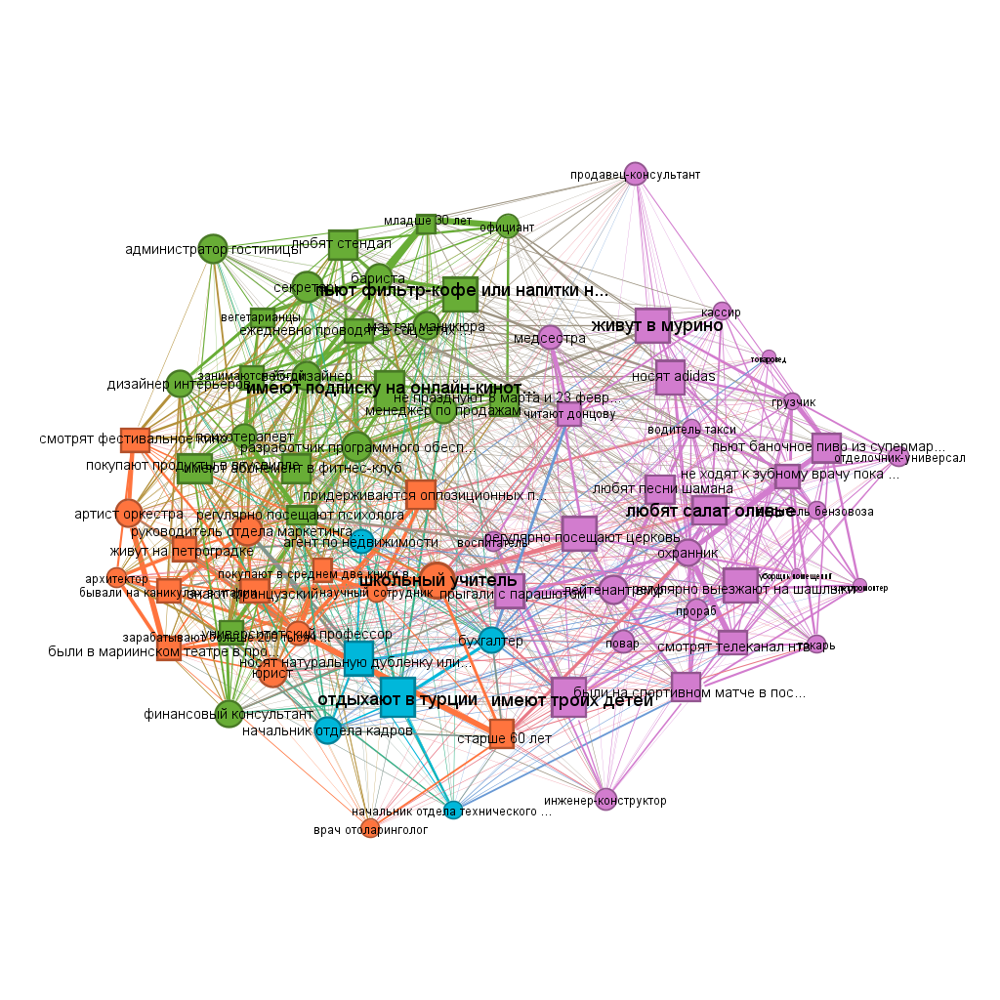

Chapter 2 group – sizes
1 – 16 2 – 30 3 – 6 4 – 23
Table with clusters:
V(g)$fast.greedy.cl = membership(cl)
asDF(g)$vertex %>%
group_by(type, fast.greedy.cl) %>%
summarise(members = toString(name)) %>%
ungroup() %>%
pivot_wider(names_from = "type",
values_from = "members") %>%
rename(`fast-greedy cluster` = fast.greedy.cl,
choices = choice,
occupations = occupation)
#> # A tibble: 4 × 3
#> `fast-greedy cluster` choices occupations
#> <membrshp> <chr> <chr>
#> 1 1 бывали на каникулах в и… артист орк…
#> 2 2 были на спортивном матч… повар, про…
#> 3 3 носят натуральную дубле… агент по н…
#> 4 4 вегетарианцы, ежедневно… администра…
#as_image(width = 8, height = 20) -- other option
#install.packages("webshot2")
#install.packages("magick")Overview from Gephi:

Case study: interlocking editors in Russian sociology
Read more about the data: https://github.com/artpech23/russian_sociology_abstracts.sequel
load data:
vertices <- read.csv("datasets/journals_nodes.csv")
edges <- read.csv("datasets/journals_edges.csv")
mode2 <- read.csv("datasets/2mode_journals.csv")
rm(edges)Get projections:
##########################################
## get bimodal network and projections: ##
##########################################
two.mode <- graph_from_data_frame(mode2 %>%
## get unique journal-editor couples:
count(journal_name,
unified_name),
directed = F)
## assign bipartite mapping:
V(two.mode)$type <- bipartite_mapping(two.mode)$type
## extract projections:
bipartite_matrix <- as_biadjacency_matrix(two.mode)
journal_matrix <- bipartite_matrix %*% t(bipartite_matrix)
people_matrix <- t(bipartite_matrix) %*% bipartite_matrix
## create journals' projection:
diag(journal_matrix) <- 0
diag(people_matrix) <- 0
g_journals <- graph_from_adjacency_matrix(journal_matrix,
mode = "undirected",
weighted = TRUE)
g_people <- graph_from_adjacency_matrix(people_matrix,
mode = "undirected",
weighted = TRUE)
rm(bipartite_matrix, journal_matrix, two.mode)Central editors:
V(g_people)$totaldegree = degree(g_people, mode = "all")
V(g_people)$betweenness.score = betweenness(g_people)
#(asDF(g_people))$vertex %>%
# arrange(desc(totaldegree))
## better way:
mode2 %>%
count(journal_name, unified_name) %>%
count(unified_name) %>%
arrange(desc(n)) %>%
top_n(7, n) %>%
kable() %>%
kable_styling(full_width = F)| unified_name | n |
|---|---|
| зубок юлия альбертовна | 9 |
| голенкова зинаида тихоновна | 8 |
| тощенко жан терентьевич | 8 |
| горшков михаил константинович | 7 |
| черныш михаил федорович | 6 |
| ивченков сергей григорьевич | 5 |
| каменева татьяна николаевна | 5 |
| омельченко елена леонидовна | 5 |
| погосян геворк арамович | 5 |
| скворцов николай генрихович | 5 |
| ярская-смирнова елена ростиславовна | 5 |
Central journals:
##############################
## get degree centralities: ##
##############################
V(g_journals)$degree = degree(g_journals, mode = "total")
## preview the most central journals:
(g_journals %>% asDF())$vertexes %>%
select(-intergraph_id) %>%
arrange(desc(degree)) %>%
head() %>%
kable() %>%
kable_styling(full_width = F)| name | degree |
|---|---|
| социологические исследования | 40 |
| журнал социологии и социальной антропологии | 23 |
| научный результат. социология и управление | 23 |
| теория и практика общественного развития | 23 |
| поиск: политика. обществоведение. искусство. социология. культура | 22 |
| социология | 22 |
Journal communities:
##########################
## community detection: ##
##########################
set.seed(42)
cl3 <- cluster_louvain(g_journals,
resolution = 0.75)
V(g_journals)$cl3 = membership(cl3)
#asDF(g_journals)
## solution preview:
set.seed(42)
par(mar=c(0,0,0,0))
plot(g_journals,
vertex.color = ifelse(V(g_journals)$cl3 == 1,
"#988F2A",
ifelse(V(g_journals)$cl3 == 2,
"coral1",
"#30638E")),
vertex.label = NA,
vertex.size = V(g_journals)$degree * 0.6)
Core/periphery:
#####################
## core/periphery: ##
#####################
core_peiphery <- netUtils::core_periphery(g_journals)
V(g_journals)$core_periphery = core_peiphery$vec
## solution preview:
set.seed(42)
par(mar=c(0,0,0,0))
plot(g_journals,
vertex.color = ifelse(V(g_journals)$core_periphery == 1,
"lightgreen",
"coral1"),
vertex.label = NA,
vertex.size = V(g_journals)$degree * 0.6)
Table with partitions (core/periphery and communities):
##############################################
## table of core/periphery and communities: ##
##############################################
journals_positions <- (asDF(g_journals))$vertexes %>%
rename(journal_name = name) %>%
arrange(desc(degree)) %>%
select(-intergraph_id, -degree)
## table preview:
head(journals_positions) %>%
kable() %>%
kable_styling(full_width = F)| journal_name | cl3 | core_periphery |
|---|---|---|
| социологические исследования | 3 | 1 |
| журнал социологии и социальной антропологии | 1 | 1 |
| научный результат. социология и управление | 3 | 1 |
| теория и практика общественного развития | 2 | 1 |
| поиск: политика. обществоведение. искусство. социология. культура | 3 | 1 |
| социология | 3 | 1 |
Community properties:
###############################
## get community properties: ##
###############################
communities <- (asDF(g_journals))$vertexes %>%
select(-intergraph_id) %>%
rename(journal_name = name) %>%
left_join(vertices, by = "journal_name") %>%
mutate(cl3 = ifelse(cl3 == 1,
"west",
ifelse(cl3 == 2,
"east",
"center"))) %>%
group_by(cl3) %>%
summarise(mean_reference_list = mean(mean_n_references2021),
mean_publications = mean(total_publications2021),
mean_citations = mean(total_citations2021),
share_foreigners = mean(share_foreigners),
share_RAS = mean(share_ras),
share_moscowites = mean(share_moscowite)
## more attributes can be calculated here. I include those which are reported among the picture.
)
## properties' preview:
communities[1:3,1:4] %>%
kable() %>%
kable_styling(full_width = F)| cl3 | mean_reference_list | mean_publications | mean_citations |
|---|---|---|---|
| center | 19.84167 | 72.66667 | 433.8333 |
| east | 18.92500 | 77.18750 | 303.8125 |
| west | 35.31923 | 44.84615 | 352.6154 |
Network slices, i.e. netwroks where only “strong” ties are retained:
#######################
## reduced networks: ##
#######################
## Here, you need to run par() and loop together. To get the reduced graphs on the same picture.
## You may also need to zoom to see them (this is due to RStusio default view properties).
par(mfrow = c(2,2))
for(i in c(0:3)){
g <- g_journals %>%
as_data_frame() %>%
filter(weight > i) %>%
graph_from_data_frame(directed = F)
set.seed(31)
par(mar=c(2,2,2,2))
V(g)$color <-((asDF(g))$vertexes %>%
left_join(journals_positions %>%
rename(name = journal_name)) %>%
mutate(cl_colors = ifelse(cl3 == 1,
"#988F2A",
ifelse(cl3 == 2,
"coral1",
"#30638E"))))$cl_colors
plot(g,
vertex.label = NA,
main = str_c("tie strength > ", i))
}
Save data to load in Gephi:
#mode2 %>%
# count(journal_name, unified_name) %>%
# select(-n) %>%
# `colnames<-`(c("Source", "Target")) %>%
# write.csv("gephi_edges.csv",
# row.names = F)
#mode2 %>%
# count(journal_name) %>%
# mutate(type = "journal") %>%
# rename(Id = journal_name) %>%
# bind_rows(mode2 %>%
# count(unified_name) %>%
# mutate(type = "person") %>%
# rename(Id = unified_name)) %>%
# select(-n) %>%
# mutate(name = Id) %>%
# write.csv("gephi_nodes.csv",
# row.names = F)Session info:
rm(list = ls())
sessionInfo()
#> R version 4.4.3 (2025-02-28 ucrt)
#> Platform: x86_64-w64-mingw32/x64
#> Running under: Windows 10 x64 (build 19045)
#>
#> Matrix products: default
#>
#>
#> locale:
#> [1] LC_COLLATE=Russian_Russia.utf8
#> [2] LC_CTYPE=Russian_Russia.utf8
#> [3] LC_MONETARY=Russian_Russia.utf8
#> [4] LC_NUMERIC=C
#> [5] LC_TIME=Russian_Russia.utf8
#>
#> time zone: Europe/Moscow
#> tzcode source: internal
#>
#> attached base packages:
#> [1] stats graphics grDevices utils datasets
#> [6] methods base
#>
#> other attached packages:
#> [1] data.table_1.17.8 factoextra_1.0.7
#> [3] ca_0.71.1 blockmodeling_1.1.8
#> [5] kableExtra_1.4.0 ggrepel_0.9.6
#> [7] tnet_3.0.16 survival_3.8-3
#> [9] networkdata_0.2.2 netUtils_0.8.3
#> [11] manynet_1.6.1 intergraph_2.0-4
#> [13] igraph_2.1.4 lubridate_1.9.4
#> [15] forcats_1.0.0 stringr_1.5.1
#> [17] dplyr_1.1.4 purrr_1.0.4
#> [19] readr_2.1.5 tidyr_1.3.1
#> [21] tibble_3.2.1 ggplot2_4.0.0
#> [23] tidyverse_2.0.0
#>
#> loaded via a namespace (and not attached):
#> [1] gtable_0.3.6 xfun_0.51
#> [3] bslib_0.9.0 lattice_0.22-6
#> [5] tzdb_0.5.0 vctrs_0.6.5
#> [7] tools_4.4.3 generics_0.1.4
#> [9] parallel_4.4.3 pkgconfig_2.0.3
#> [11] Matrix_1.7-2 RColorBrewer_1.1-3
#> [13] S7_0.2.0 lifecycle_1.0.4
#> [15] compiler_4.4.3 farver_2.1.2
#> [17] codetools_0.2-20 htmltools_0.5.8.1
#> [19] sass_0.4.10 yaml_2.3.10
#> [21] pillar_1.11.1 jquerylib_0.1.4
#> [23] cachem_1.1.0 network_1.19.0
#> [25] tidyselect_1.2.1 digest_0.6.37
#> [27] stringi_1.8.4 bookdown_0.45
#> [29] splines_4.4.3 fastmap_1.2.0
#> [31] grid_4.4.3 cli_3.6.4
#> [33] magrittr_2.0.3 tidygraph_1.3.1
#> [35] withr_3.0.2 scales_1.4.0
#> [37] timechange_0.3.0 rmarkdown_2.30
#> [39] hms_1.1.3 memoise_2.0.1
#> [41] coda_0.19-4.1 evaluate_1.0.5
#> [43] knitr_1.50 viridisLite_0.4.2
#> [45] rlang_1.1.5 downlit_0.4.4
#> [47] Rcpp_1.0.14 glue_1.8.0
#> [49] xml2_1.5.0 svglite_2.1.3
#> [51] rstudioapi_0.17.1 jsonlite_2.0.0
#> [53] R6_2.6.1 statnet.common_4.11.0
#> [55] systemfonts_1.3.1 fs_1.6.6Home assignment 4
The goal of this assignment is to analyze the structure and relationships within a two-mode network, understand its properties, and derive meaningful conclusions based on the patterns observed. Choose a dataset you like:
Corporate interlocks in Scotland
Hollywood film music
data you find/construct by your own (github, google, etc.)
Describe the network: who/what are the nodes? Vizualize it the way you prefer (in R or in Gephi, do not forget about different layouts possible). Select the mode of analysis: choose to work with either two-mode network or one-mode projections. In the second scenario, provide vizualizations of both projections. Discuss whether you want to work with one specific projection or not. Do the analysis you consider relevant: compute centrality measures, search for communities, core/periphery, etc.
Format: word/pdf/html. If you construct your document from R, make sure it is formatted nicely (no long outputs printed, etc.) Deadline - before your next class.